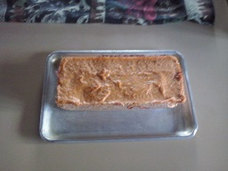

Tarta de Manzana
Ingredientes para 4 raciones

- 6 huevos
- 250g de harina
- 100g de mantequilla
- 150g de azúcar
- 1 sobrecito de levadura
- 1 limón
- 3 manzanas
- 3 cucharadas de azúcar glas
Realización:
Batir los huevos con el azúcar
hasta obtener una pasta suave
y esponjosa. Añadir poco a poco
la ralladura y el zumo de limón,
y la mantequilla derretida, incorporar
la levadura y mezclar todo bien .Pelar
las manzanas y cortarlas en cuñas finas.
Colocarlas en una tartera engrasada con
mantequilla y enharinada, verter encima
la masa e introducir en el horno precalentado
a 180ºC, durante 30 minutos. Terminada la
cocción, desmoldar la tarta sobre una fuente
de servir. Espolvorear la tarta con el azúcar
glas y servir, templada o fría.